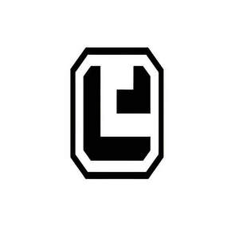

Trade Mark Journal No.2025/022 30 May 2025
UK00004120127 4 November 2024 (3,7,8,9,11,12,14,20,21,25,28)

- Class 3
- Soap; Washing-up liquids; Polishing preparations; Grinding preparations; Essential oils; Cosmetics; Air fragrancing preparations; Incense; Cosmetics for animals; Toothpaste.
- Class 7
- Agitators; Meat choppers, electric / Meat mincers, electric; Dishwashers; Food processors, electric; Washing machines [laundry]; Knives, electric; Hydraulic tools; Pumps [machines]; Taps [parts of machines, engines or motors]; Steam mops.
- Class 8
- Agricultural implements, hand-operated; Hand tools, hand-operated; Scissors; Garden tools, hand-operated; Hobby knives [scalpels]; Cutting tools [hand tools]; Harpoons; Hand pumps; Beard clippers; Tableware [knives, forks and spoons].
- Class 9
- Smart watches; Chronographs [time recording apparatus]; Scales; Measures; Neon signs; Holders adapted for mobile telephones and smartphones; Headphones; Selfie sticks [hand-held monopods]; Telescopes; Fire extinguishers; Life-saving apparatus and equipment; Portable power supplies (rechargeable batteries); Alarms; Spectacles.
- Class 11
- Lighting apparatus and installations; Cooking apparatus and installations; Cooling appliances and installations; Air filtering installations; Fans [air-conditioning]; Hair dryers; Bath fittings; Disinfectant apparatus; Radiators, electric; Heating installations; Heating apparatus; Bread baking machines.
- Class 12
- Bicycles; Remote control vehicles, other than toys; Pushchairs; Trolleys; Photography drones; Water scooters [personal watercraft]; Vehicles for locomotion by land, air, water or rail; Vehicle seats; Self-balancing scooters; Cars.
- Class 14
- Necklaces [jewellery]; Jewellery boxes; Earrings; Wristwatches; Boxes of precious metal; Watch bands; Jewellery; Rings [jewellery]; Sterling silver jewellery; Alloys of precious metal.
- Class 20
- Stacking boxes of plastic; Tables; Furniture; Chairs [seats]; Work benches; Ergonomic chairs for seated massage; Hand-held mirrors [toilet mirrors]; Bedding, except linen; Works of art of bamboo; Doors for furniture.
- Class 21
- Tableware of porcelain; Tableware, other than knives, forks and spoons; Works of art made of crystal; Drinking vessels; Sprinklers; Glass tableware; Combs; Toothbrushes, electric; Cosmetic utensils; Portable cool boxes, non-electric; Mops; Ultrasonic mosquito repellers.
- Class 25
- Clothing; Underwear; Layettes [clothing]; Waterproof clothing; Footwear; Caps being headwear; Hosiery; Gloves [clothing]; Shawls; Scarves.
- Class 28
- Foosball tables; Toys; Swings; Body-building apparatus; Machines for physical exercises; Gloves for games; Chess games; Archery implements; Balls for games; Fishing tackle.
Yuyao Hengxi Technology Co Ltd
Representative: IPEY